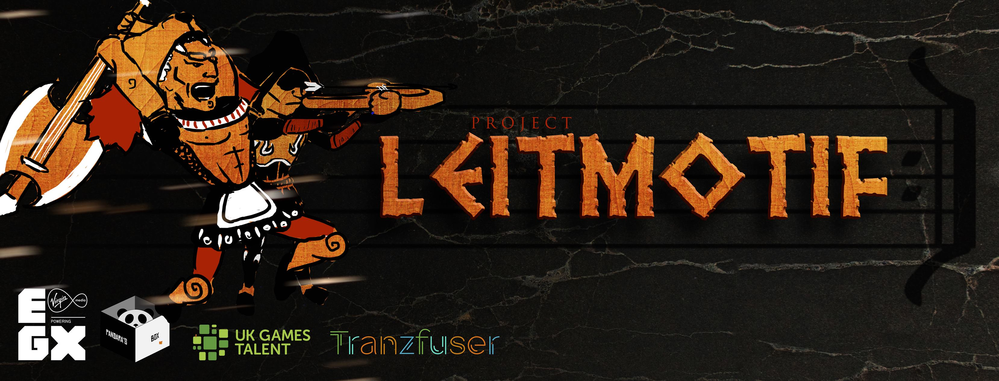

Leitmotif

Project Leitmotif concerns an innovative hybrid battle system crossing Rhythmic and Turn-Based gameplay.
During battles, each enemy produces their own musical pattern, or Leitmotif. Players must listen and determine these patterns,
and matching these in combat provides large benefits. This makes it so that, while battles may appear similar to Pokémon or
Final Fantasy-esque combat (where turns constantly tick towards readiness to ensure flow), depth and interactivity is created
through these Leitmotifs. Seeking to blend Guitar Hero and Paper Mario gameplay, while encouraging keen listeners, greater influence
upon the traditionally static turn-based structure is provided.
The game is still in development, an early demo was playable on the showfloor of EGX 2016 in the Rezzed area.
Setup for #EGX2016 Day2 is done! Come say hi! We're at the #Tranzfuser section in the Rezzed area ^_^ pic.twitter.com/vtpnYm3zl6
— Pandara's Box (@Pandaras_Box) September 23, 2016
Vlogs by the team during the development of the project across 2017 can be viewed below: